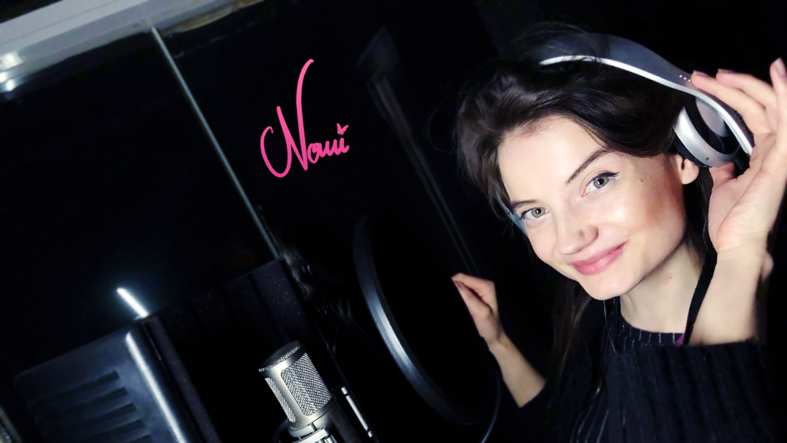

Nomi Bontegard mindig is arról álmodozott, hogy megvalósítsa a fejében kavargó ötleteket, és már jó úton halad e cél felé. Képzőművészeti tehetségét a Star Stable-nél betöltött munkakörében, játékgrafikusként és animátorként tudja kamatoztatni, ahol modelleket készít, textúrákat tervez és lovakat hoz létre.
Nomi énekesnő és dalszerző is egyben; a stockholmi Futuregames-en folytatott játékfejlesztői tanulmányai mellett zenei producerekkel is együttműködött. A Spotify-on már több kislemezt is megjelentetett, amelyek összesen több mint 6 millió lejátszást értek el, és olyan előadókkal dolgozott együtt, mint a Hot Shade és Charlie Who?
Nomi a Star Stable: Mistfall című sorozatban
Most pedig készen áll arra, hogy szólóelőadóként is megtegye a következő lépést a Star Stable: Mistfall sorozat epikus főcímdalával, a Fire-rel! A Nomi és a dal producere, Slowface által írt Fire a fiatalok és az idősek, valamint a remény és a kétség közötti ellentétet ábrázolja. Az élet néha nehéz, de mi továbbra is küzdünk valami nagyobbért!
Nézd meg a „Fire” hivatalos videoklipjét!
Fire – Élő fellépés
Nézd meg a Fire élő fellépését!